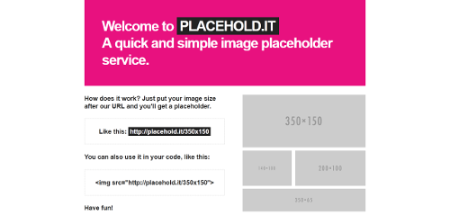
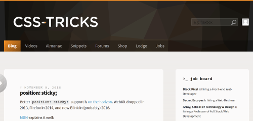
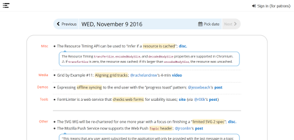
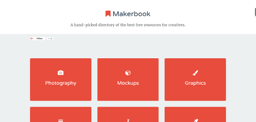
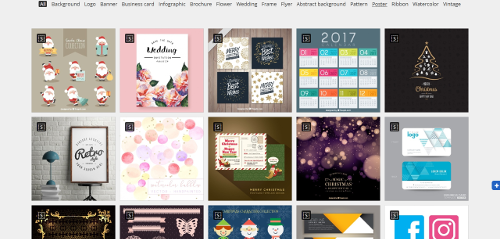
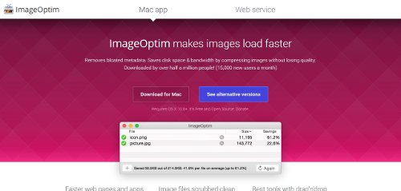
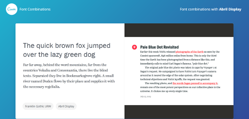

This Site
A place to document things found on the web during the week. This will usually include
Websites, Web people, Podcasts, SVG related content and Web news.
Updates will be made during the week, but at least one new item is guarenteed per week.
Date Added: 11/9/2016
A useful page for grabbing compatable colour combinations to use in your project. You can also create your own using a colour wheel on the home page.

Date Added: 11/9/2016
I cant reccomend this site enough, its been useful to me on a number of occasions. Useful for prototyping image layouts and posting code on the web that includes an Img.

Date Added: 11/9/2016
Css tricks is a gold mine for any web developer who wants to be in the know. The site has a great blog, useful snippets, a forum, and an excellent job board.

Date Added: 11/4/2016
Open Web Platform Daily Digest. A concatination of web news.

Date Added: 11/4/2016
A hand-picked directory of the free resources

Date Added: 11/4/2016
Freepik helps you to find free vector art, illustrations, icons, PSD and photos for using in websites, banners, presentations, magazines...

Date Added: 11/4/2016
A large library of background textures, each can be recoloured to suit your needs.

(He describes it best himself.)
Dudley Storey, author of Pro CSS3 Animation, Smashing Magazine contributing editor, teacher and speaker. This is my site (formerly demosthenes.info), where I write about all aspects of web development.

SVG is sharp, can be resized without quality loss, embedded as code, and lightweight in size. This site contains some useful patterns.

Date Added: 11/4/2016
Faster web pages and apps Reduces image file sizes — so they take up less disk space and download faster — by applying advanced compression that preserves quality. Image files scrubbed clean Removes invisible junk: private EXIF metadata from
digital cameras, embedded thumbnails, comments, and unnecessary color profiles. Best tools with drag'n'drop Seamlessly combines all the best image optimization tools: MozJPEG, Pngcrush, pngquant, 7zip and Google Zopfli. All Free and Open-Source.

Date Added: 11/4/2016
Need help finding compatable font types? Here you go!
